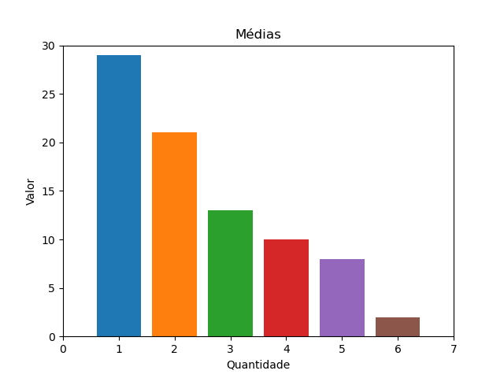

Com os dados informados nas etapas anteriores, foram feitos os cálculos para comparação e estes são os resultados:
Aqui estão presentes as Médias e Variâncias para cada tratamento que você informou:
| {% for value in average %} | T{{ forloop.counter }} | {% endfor %}
|---|---|
| Média | {% for value in average %}{{ value }} | {% endfor %}
| Variância | {% for value in variance %}{{ value }} | {% endfor %}
Com isso, informe-nos os dados coletados, para que seja feita a comparação entre as amostras:
| MQ Dentro | {{ mq_in }} |
|---|---|
| HSD | {{ hsd }} |
Quase finalizando, temos a comparação entre as médias, informando se elas são diferentes entre si ou não.
Para decidir se uma média é diferente da outra, analisamos se a subtração entre as duas médias é menor que o valor de HSD. Sendo assim, temos:
| {% else %} |
{% endif %} {% if forloop.first or forloop.parentloop.first %} {{ cell }}
{% else %} {% if cell > hsd %}
{{ cell }} {% else %}{{ cell }} {% endif %} |
{% endif %} {% endfor %}
|---|
Agora, por final, teremos os resultados e sua análise:
Abaixo são apresentadas as médias e os códigos de equivalência
Estes são os resultados para os dados fornecidos:
| Média | {% for value in descending_averages %}{{ value }} | {% endfor %}
|---|---|
| Código | {% for value in codes %}{{ value }} | {% endfor %}
Este é o gráfico das médias dos tratamentos apresentados:
|  |